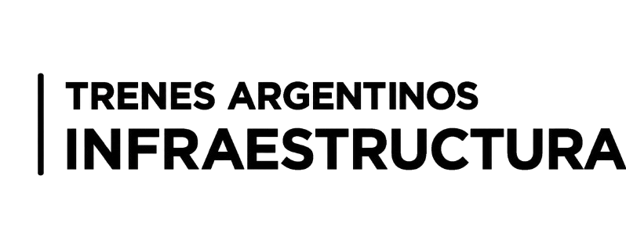

INFRASTRUCTURE SHARING
Towers, fibre optics and sites for multiple operators.
- Optimized CAPEX
Less duplicated investment and faster deployments.
- Operational scale
Capacity for operators, carriers and public organizations.


